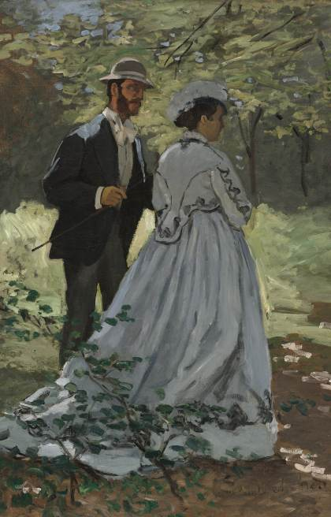
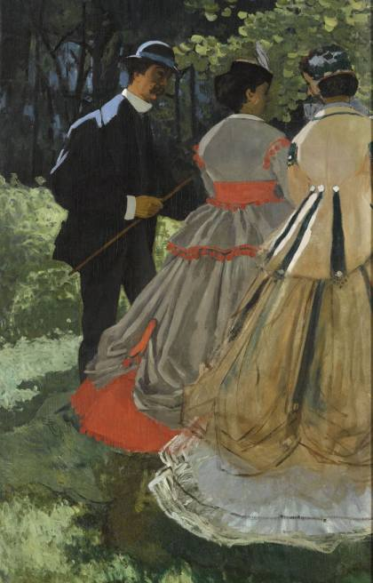

당신은
튜브 물감을 들고
처음 밖으로 나온 화가입니다
같은 장면을 밖의 빛으로 다시 칠해 보세요

실내 캔버스1860년대 아틀리에 팔레트로 재현 · 제작 전 임시
손가락으로 문질러 칠하세요
“정오와 저녁의 햇빛은 같은 나무도
화가의 일기장
전혀 다른 색으로 만든다.”
모네가 실제로 그린 같은 장면 — 밖에서 / 아틀리에에서


1841
존 고프 랜드, 접는 금속 튜브 특허
물감을 들고 나가는 일을 가볍게 만든 도구 — 그 박스가 지금 옆에 있다
임시 · 제작 전 대체 이미지. 부스의 실내·야외 캔버스 2점은 아직 없다. 야외 판은 모네 〈아르장퇴유의 화가의 집〉 1873(시카고 AIC · CC0), 실내 판은 같은 그림을 1860년대 아틀리에 완성작(〈정원의 여인들〉 1866–67 · 오르세)의 색 통계로 다시 칠한 재현(img/c3-indoor.py).